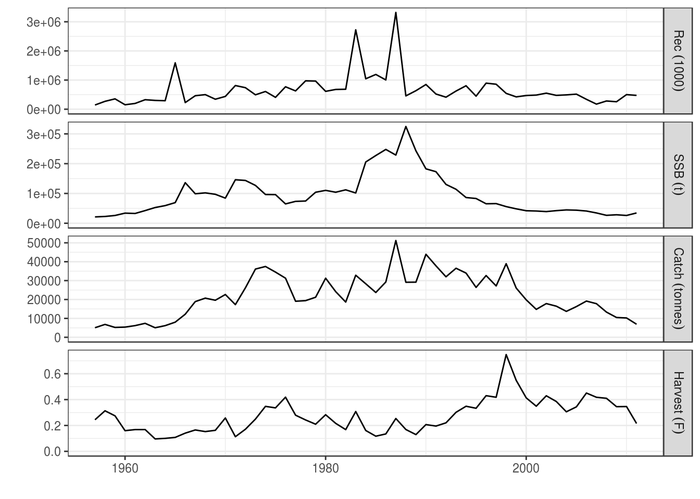
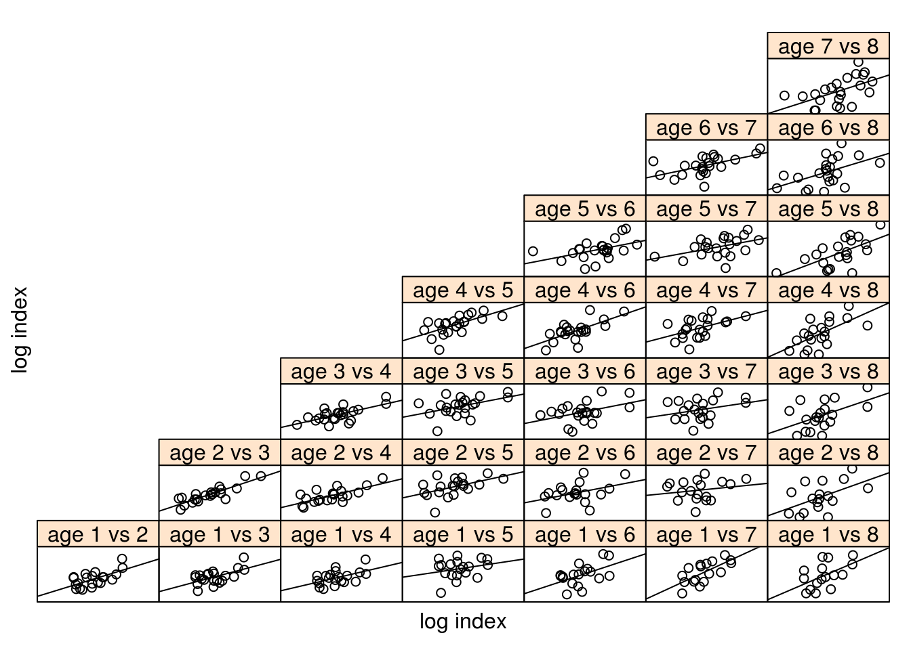

his tutorial details methods for reading various formats of data into R for generating object of the FLStock, FLIndex and FLFleet classes.
To follow this tutorial you should have installed the following packages:
You can do so as follows,
install.packages(c("ggplot2"))
install.packages(c("ggplotFL"), repos="http://flr-project.org/R")# This chunk loads all necessary packages, trims pkg messages
library(FLCore); library(FLFleet)
library(ggplotFL)This section covers methods for reading in the data required to construct FLStock objects.
Fisheries data are generally stored in different format (cvs, excel, SAS…). R provides tools to read and import data from simple text files to more advanced SAS files or databases. Datacamp is a nice tutorial to quickly import data into R.
Your data are stored in a folder in your computer or a server. You have to tell R what is the path to the data. You can check the working directory already active in your R session using the command getwd(). To set the working directory use setwd(“directory name”). Case is important, use // or for separating folders and directories in Windows.
This tutorial will give some examples but regardless the format, the different steps are: - Finding the right function to import data into R - Reshaping the data as a matrix - creating an FLQuant object
There is many ways of reading csv files. read.table with ‘header’, ‘sep’, ‘dec’ and ‘row.names’ options will allow you reading all .csv and .txt files
The read.csv or read.csv2 function are very useful to read csv files.
catch.n <- read.csv("src/catch_numbers.csv",row=1)We have read in the data as a data.frame
class(catch.n)[1] "data.frame"The data are now in your R environment, before creating a FLQuant object, you need to make sure it is consistent with the type of object and formatting that is needed to run the FLQuant methd. To get information on the structure and format needed type ?FLQuant in your R Console.
FLQuant accept ‘vector’, ‘array’ or ‘matrix’. We can convert the object catch.n to a matrix
catch.n.matrix <- as.matrix(catch.n)
catch.n.matrix[,1:8]| X1957 | X1958 | X1959 | X1960 | X1961 | X1962 | X1963 | X1964 |
|---|---|---|---|---|---|---|---|
| 0 | 100 | 1060 | 516 | 1768 | 259 | 132 | 88 |
| 7709 | 3349 | 7251 | 18221 | 7129 | 7170 | 6446 | 7030 |
| 9965 | 9410 | 3585 | 7373 | 14342 | 5535 | 5929 | 5903 |
| 1394 | 6130 | 8642 | 3551 | 6598 | 10427 | 2032 | 4048 |
| 6235 | 4065 | 3222 | 2284 | 2481 | 5235 | 3192 | 2195 |
| 2062 | 5584 | 1757 | 770 | 2392 | 3322 | 3541 | 3972 |
| 1720 | 6666 | 3699 | 1924 | 1659 | 7289 | 5889 | 9168 |
A FLQuant object is made of six dimensions. The name of the first dimension can be altered by the user from its default, quant. This could typically be age or length for data related to natural populations. The only name not accepted is ‘cohort’, as data structured along cohort should be stored using the FLCohort class instead. Other dimensions are always names as follows: year, for the calendar year of the data point; unit, for any kind of division of the population, e.g. by sex; season, for any temporal strata shorter than year; area, for any kind of spatial stratification; and iter, for replicates obtained through bootstrap, simulation or Bayesian analysis.
When importing catch number for example, the input object needs to be formatted as such: age or length in the first dimension and years in the second dimension. If the object is not formatted in the right way, you can use the reshape functions from the package reshape2.
We need to specify the dimnames
catch.n.flq <- FLQuant(catch.n.matrix, dimnames=list(age=1:7, year = 1957:2011))
catch.n.flq[,1:7]An object of class "FLQuant"
An object of class "FLQuant"
, , unit = unique, season = all, area = unique
year
age 1957 1958 1959 1960 1961 1962 1963
1 0 100 1060 516 1768 259 132
2 7709 3349 7251 18221 7129 7170 6446
3 9965 9410 3585 7373 14342 5535 5929
4 1394 6130 8642 3551 6598 10427 2032
5 6235 4065 3222 2284 2481 5235 3192
6 2062 5584 1757 770 2392 3322 3541
7 1720 6666 3699 1924 1659 7289 5889
units: NA FLCore contains functions for reading in fish stock data in commonly used formats. To read a single variable (e.g. numbers-at-age, maturity-at-age) from the Lowestoft VPA format you use the readVPA function. The following example reads the catch numbers-at-age for herring:
# Read from a VPA text file
catch.n <- readVPAFile(file.path('src', 'her-irlw',"canum.txt"))
class(catch.n)[1] "FLQuant"
attr(,"package")
[1] "FLCore"This can be repeated for each of the data files. In addition, functions are available for Multifan-CL format readMFCL and ADMB readADMB.
Alternatively, if you have the full information for a stock in the Lowestoft VPA, Adapt, CSA or ICA format you can read in together using the readFLStock function. Here, you point the function to the index file, with all other files in the same directory:
# Read a collection of VPA files, pointing to the Index file:
her <- readFLStock(file.path('src','her-irlw','index.txt'))
class(her)[1] "FLStock"
attr(,"package")
[1] "FLCore"Which we can see correctly formats the data as an FLStock object.
summary(her)An object of class "FLStock"
Name: Herring VIa(S) VIIbc
Description: Imported from a VPA file. ( src/her-irlw/index.txt ). Tue Mar 7 22: [...]
Quant: age
Dims: age year unit season area iter
7 55 1 1 1 1
Range: min max pgroup minyear maxyear minfbar maxfbar
1 7 NA 1957 2011 1 7
catch : [ 1 55 1 1 1 1 ], units = NA
catch.n : [ 7 55 1 1 1 1 ], units = NA
catch.wt : [ 7 55 1 1 1 1 ], units = NA
discards : [ 1 55 1 1 1 1 ], units = NA
discards.n : [ 7 55 1 1 1 1 ], units = NA
discards.wt : [ 7 55 1 1 1 1 ], units = NA
landings : [ 1 55 1 1 1 1 ], units = NA
landings.n : [ 7 55 1 1 1 1 ], units = NA
landings.wt : [ 7 55 1 1 1 1 ], units = NA
stock : [ 1 55 1 1 1 1 ], units = NA
stock.n : [ 7 55 1 1 1 1 ], units = NA
stock.wt : [ 7 55 1 1 1 1 ], units = NA
m : [ 7 55 1 1 1 1 ], units = NA
mat : [ 7 55 1 1 1 1 ], units = NA
harvest : [ 7 55 1 1 1 1 ], units = f
harvest.spwn : [ 7 55 1 1 1 1 ], units = NA
m.spwn : [ 7 55 1 1 1 1 ], units = NA Note: the units for the slots have not been set. We will deal with this in the next section.
In addition, this object only contains the input data for the stock assessment, not any estimated values (e.g. harvest rates, stock abundances). You can add these to the object as follows:
her@stock.n <- readVPAFile(file.path('src','her-irlw',"n.txt"))
print(her@stock.n[,ac(2007:2011)]) # only print 2007:2011An object of class "FLQuant"
, , unit = unique, season = all, area = unique
year
age 2007 2008 2009 2010 2011
1 174571.1 282187.1 256537.9 500771.9 473853.8
2 124606.8 64089.7 103602.4 94215.4 183911.3
3 113657.7 75691.6 39075.8 65137.7 59210.2
4 55794.7 60037.5 40312.1 22271.7 37090.3
5 33210.4 28921.5 31447.1 23016.5 12700.7
6 17193.0 16241.9 14308.2 17112.1 12507.7
7 5355.8 9315.2 8255.6 9662.4 16579.1
units: NA her@harvest <- readVPAFile(file.path('src','her-irlw',"f.txt"))Now we have a fully filled FLStock object. But let’s check the data are consistent.
# The sum of products (SOP)
apply(her@landings.n * her@landings.wt, 2, sum)[,ac(2007:2011)]An object of class "FLQuant"
An object of class "FLQuant"
, , unit = unique, season = all, area = unique
year
age 2007 2008 2009 2010 2011
all 17790.6 13340.9 10482.3 10232.6 6921.2
units: NA # and the value read in from the VPA file
her@landings[,ac(2007:2011)]An object of class "FLQuant"
An object of class "FLQuant"
, , unit = unique, season = all, area = unique
year
age 2007 2008 2009 2010 2011
all 17791 13340 10468 10241 6919
units: NA ## They are not the same!! We correct the landings to be the same as the SOP - there is a handy function for this purpose
her@landings <- computeLandings(her)
# In addition, there is no discard information
her@discards.wt[,ac(2005:2011)]An object of class "FLQuant"
An object of class "FLQuant"
, , unit = unique, season = all, area = unique
year
age 2005 2006 2007 2008 2009 2010 2011
1 NA NA NA NA NA NA NA
2 NA NA NA NA NA NA NA
3 NA NA NA NA NA NA NA
4 NA NA NA NA NA NA NA
5 NA NA NA NA NA NA NA
6 NA NA NA NA NA NA NA
7 NA NA NA NA NA NA NA
units: NA her@discards.n[,ac(2005:2011)]An object of class "FLQuant"
An object of class "FLQuant"
, , unit = unique, season = all, area = unique
year
age 2005 2006 2007 2008 2009 2010 2011
1 NA NA NA NA NA NA NA
2 NA NA NA NA NA NA NA
3 NA NA NA NA NA NA NA
4 NA NA NA NA NA NA NA
5 NA NA NA NA NA NA NA
6 NA NA NA NA NA NA NA
7 NA NA NA NA NA NA NA
units: NA # Set up the discards and catches
her@discards.wt <- her@landings.wt
her@discards.n[] <- 0
her@discards <- computeDiscards(her)
her@catch <- her@landings
her@catch.wt <- her@landings.wt
her@catch.n <- her@landings.nFunctions are available to computeLandings, computeDiscards, computeCatch and computeStock. These functions take the argument slot = 'catch', slot = 'wt' and slot = 'n' to compute the total weight, individual weight and numbers respectively, in addition to slot = 'all'.
Before we are finished, we want to ensure the units and range references are correct. This is important as the derived calculations require the correct scaling (e.g. fbar, for the average fishing mortality range over the required age ranges).
First, let’s ensure an appropriate name and description are assigned:
summary(her)An object of class "FLStock"
Name: Herring VIa(S) VIIbc
Description: Imported from a VPA file. ( src/her-irlw/index.txt ). Tue Mar 7 22: [...]
Quant: age
Dims: age year unit season area iter
7 55 1 1 1 1
Range: min max pgroup minyear maxyear minfbar maxfbar
1 7 NA 1957 2011 1 7
catch : [ 1 55 1 1 1 1 ], units = NA
catch.n : [ 7 55 1 1 1 1 ], units = NA
catch.wt : [ 7 55 1 1 1 1 ], units = NA
discards : [ 1 55 1 1 1 1 ], units = NA
discards.n : [ 7 55 1 1 1 1 ], units = NA
discards.wt : [ 7 55 1 1 1 1 ], units = NA
landings : [ 1 55 1 1 1 1 ], units = NA
landings.n : [ 7 55 1 1 1 1 ], units = NA
landings.wt : [ 7 55 1 1 1 1 ], units = NA
stock : [ 1 55 1 1 1 1 ], units = NA
stock.n : [ 7 55 1 1 1 1 ], units = NA
stock.wt : [ 7 55 1 1 1 1 ], units = NA
m : [ 7 55 1 1 1 1 ], units = NA
mat : [ 7 55 1 1 1 1 ], units = NA
harvest : [ 7 55 1 1 1 1 ], units = NA
harvest.spwn : [ 7 55 1 1 1 1 ], units = NA
m.spwn : [ 7 55 1 1 1 1 ], units = NA #name and descriptions
her@name # ok[1] "Herring VIa(S) VIIbc "her@desc # ok[1] "Imported from a VPA file. ( src/her-irlw/index.txt ). Tue Mar 7 22:27:31 2017"# Set the Fbar range for the stock
her@range[c('minfbar','maxfbar')] # ok, but can be filled with <- c(min,max)minfbar maxfbar
1 7 # set the plus group
her@range['plusgroup'] <- 7 # final year is a plusgroup
## Units
units(her@catch) <- units(her@discards) <- units(her@landings) <- units(her@stock) <- 'tonnes'
units(her@catch.n) <- units(her@discards.n) <- units(her@landings.n) <- units(her@stock.n) <- '1000'
units(her@catch.wt) <- units(her@discards.wt) <- units(her@landings.wt) <- units(her@stock.wt) <- 'kg'
units(her@harvest) <- 'f'This should now have the correct units defined:
summary(her)An object of class "FLStock"
Name: Herring VIa(S) VIIbc
Description: Imported from a VPA file. ( src/her-irlw/index.txt ). Tue Mar 7 22: [...]
Quant: age
Dims: age year unit season area iter
7 55 1 1 1 1
Range: min max pgroup minyear maxyear minfbar maxfbar
1 7 7 1957 2011 1 7
catch : [ 1 55 1 1 1 1 ], units = tonnes
catch.n : [ 7 55 1 1 1 1 ], units = 1000
catch.wt : [ 7 55 1 1 1 1 ], units = kg
discards : [ 1 55 1 1 1 1 ], units = tonnes
discards.n : [ 7 55 1 1 1 1 ], units = 1000
discards.wt : [ 7 55 1 1 1 1 ], units = kg
landings : [ 1 55 1 1 1 1 ], units = tonnes
landings.n : [ 7 55 1 1 1 1 ], units = 1000
landings.wt : [ 7 55 1 1 1 1 ], units = kg
stock : [ 1 55 1 1 1 1 ], units = tonnes
stock.n : [ 7 55 1 1 1 1 ], units = 1000
stock.wt : [ 7 55 1 1 1 1 ], units = kg
m : [ 7 55 1 1 1 1 ], units = NA
mat : [ 7 55 1 1 1 1 ], units = NA
harvest : [ 7 55 1 1 1 1 ], units = f
harvest.spwn : [ 7 55 1 1 1 1 ], units = NA
m.spwn : [ 7 55 1 1 1 1 ], units = NA plot(her) + theme_bw() # using the simple black and white theme
Two solutions can be used to read abundance indices into FLR.
If your data are formatted in a Lowestoft VPA format then FLCore contains functions for reading in indices. To read an abundance index, you use the readFLIndices function. The following example reads the index from ple4 example:
indices <- readFLIndices('src/ple4_ISIS.txt')Using this function, slot indices@names is already filled by BTS-ISIS, and the information slot indices@range too.
If your data are not formatted in a Lowestoft VPA format, then you and read them using read.table from base R, for example.
indices <- read.table('src/ple4Index1.txt')which needs to be transformed in FLQuant
indices <- FLQuant(as.matrix(indices), dimnames=list(age=1:8, year = 1985:2008))And in FLIndex
indices <- FLIndex(index = indices)And then in FLIndices
indices <- FLIndices(indices)
plot(indices[[1]])
slot indices@range needs to be filled in with the end and start date of the tuning series
indices[[1]]@range[c('startf', 'endf')] <- c(0.66,0.75)Reading data on fleets into an FLFleet object is complicated by the multi-layer structure of the object. The object is defined so that:
| Level | Class | Contains |
|---|---|---|
| 1 | FLFleet | variables relating to vessel level activity |
| 2 | FLMetier(s) | variables relating to fishing level activity |
| 3 | FLCatch(es) | variables relating to stock catches |
Here are the slots for each level:
# FLFleet level
summary(FLFleet())An object of class "FLFleet"
Name:
Description:
Quant: quant
Dims: quant year unit season area iter
quant 1 1 1 1 1
Range: min max minyear maxyear
NA NA 1 1
effort : [ 1 1 1 1 1 1 ], units = NA
fcost : [ 1 1 1 1 1 1 ], units = NA
capacity : [ 1 1 1 1 1 1 ], units = NA
crewshare : [ 1 1 1 1 1 1 ], units = NA
Metiers: # FLMetier level
summary(FLMetier())An object of class "FLMetier"
Name:
Description:
Gear : NA
Quant: quant
Dims: quant year unit season area iter
quant 1 1 1 1 1
Range: min max minyear maxyear
NA NA 1 1
effshare : [ 1 1 1 1 1 1 ], units = NA
vcost : [ 1 1 1 1 1 1 ], units = NA
Catches:
1 : [ 1 1 1 1 1 1 ]# FLCatch level
summary(FLCatch())An object of class "FLCatch"
Name: NA
Description:
Quant: quant
Dims: quant year unit season area iter
quant 1 1 1 1 1
Range: min max pgroup minyear maxyear
NA NA NA 1 1
landings : [ 1 1 1 1 1 1 ], units = NA
landings.n : [ 1 1 1 1 1 1 ], units = NA
landings.wt : [ 1 1 1 1 1 1 ], units = NA
landings.sel : [ 1 1 1 1 1 1 ], units = NA
discards : [ 1 1 1 1 1 1 ], units = NA
discards.n : [ 1 1 1 1 1 1 ], units = NA
discards.wt : [ 1 1 1 1 1 1 ], units = NA
discards.sel : [ 1 1 1 1 1 1 ], units = NA
catch.q : [ 1 1 1 1 1 1 ], units = NA
price : [ 1 1 1 1 1 1 ], units = NA Due to the different levels, units and dimensions of the variables and the potentially high number of combinations of fleets, métier and stocks in a mixed fishery - getting the full data into an FLFleets object (which is a list of FLFleet objects) can be an onerous task.
A way of simplifying the generation of the fleet object is to ensure all the data are in a csv file with the following structure:
| Fleet | Metier | Stock | type | age | year | unit | season | area | iter | data |
|---|---|---|---|---|---|---|---|---|---|---|
| Fleet1 | Metier1 | Stock1 | landings.n | 1 | 2011 | 1 | all | unique | 1 | 254.0 |
| Fleet2 | Metier1 | Stock2 | landings.wt | 1 | 2011 | 1 | all | unique | 1 | 0.3 |
To generate the required structure, you can then read in the file and generate the object using an lapply function:
# Example of generating fleets
fl.nam <- unique(data$Fleet) # each of the fleets
yr.range <- 2005:2011 # year range of the data - must be same, even if filled with NAs or 0s
# empty FLQuant for filling with right dimensions
fq <- FLQuant(dimnames = list(year = yr.range), quant = 'age')
### Fleet level slots ###
fleets <- FLFleet(lapply(fl.nam, function(Fl) {
# blank quants with the same dims
eff <- cap <- crw <- cos.fl <- fq
# fleet effort
eff[,ac(yr.range)] <- data$data[data$Fleet == Fl & data$type == 'effort']
units(eff) <- '000 kw days'
## Repeat for each fleet level variables (not shown) ##
### Metier level slots ###
met.nam <- unique(data$Metier[data$Fleet == Fl]) # metiers for fleet
met.nam <- met.nam[!is.na(met.nam)] # exclude the fleet level data
metiers <- FLMetiers(lapply(met.nam, function(met) {
# blank quants
effmet <- cos.met <- fq
# effort share for metier
effmet[,ac(yr.range)] <- data$data[data$Fleet == Fl & data$Metier & data$type == 'effshare']
units(effmet) <- NA
## Repeat for each metier level variables (not shown) ##
sp.nam <- unique(data$stock[data$Fleet == Fl & data$Metier == met]) # stocks caught by metier
sp.nam <- sp.nam[!is.na(sp.nam)] # exclude fleet and metier level data
catch <- FLCatches(lapply(sp.nam, function(S){
print(S)
# Quant dims may be specific per stock
la.age <- FLQuant(dimnames = list(age = 1:7, year = yr.range, quant = 'age'))
la.age[,ac(yr.range)] <- data$data[data$Fleet == Fl & data$Metier == met & data$Stock == S & data$type == 'landings.n']
units(la.age) <- '1000'
## Repeat for all stock level variables (not shown) ##
# Build F
res <- FLCatch(range = yr.range, name = S, landings.n = la.age,...)
## Compute any missing slots, e.g.
res@landings <- computeLandings(res)
return(res) # return filled FLCatch
})) # End of FLCatches
# Fill an FLMetier with all the stock catches
m <- FLMetier(catches = catch, name = met)
m@effshare <- effmet
m@vcost <- vcost
})) # end of FLMetiers
fl <- FLFleet(metiers = metiers, name = Fl, effort = ef,...) # fill with all variables
return(fl)
}))
names(fleets) <- fl.namYou should now have a multilevel object with FLFleets containing a list of FLFleet objects, each which in turn contain FLMetiers with a list of FLMetier for the fleet, and a list of FLCatches containing FLCatch objects for each stock caught by the métier.
None
This document is licensed under the Creative Commons Attribution-ShareAlike 4.0 International license.